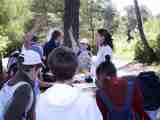
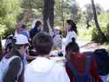

"Cette journée m'a fait comprendre que l'homme est le principal danger pour la nature car il produit la pollution ; parfois il fait des bétises." Victor N Ecole du Sacré Coeur - Classe de Mme Clair -
FÊTE DE LA NATURE 2002
LE 07 JUIN À ROQUES-HAUTES -BEAURECUEIL
Un demi millier d'enfants au pied de
Sainte-Victoire, ça ne passe pas inaperçu !
Pour
la 12ème année consécutive, notre association a organisé la Fête de la
Nature Cette année, les animations étaient
basées sur le thème : "Faune et Flore Méditerranéenne en
danger".
En effet, notre région
est fragile car l'urbanisation y est croissante. De plus, elle bénéficie d'un
flux touristique important. Ces facteurs donnent lieu à une transformation du
paysage, le plus souvent au détriment de l'environnement. A cela s'ajoute un
climat sec et venté qui facilite les départs de feu.
Durant
toute la journée, une vingtaine de partenaires se sont mobilisés pour proposer
des animations. Des enfants de CM1 et CM2 du pays d'Aix et de la vallée
de l'Arc, ont découvert les dangers qui menacent l'environnement au travers de
jeux éducatifs. Au programme : balade
botanique, chasse à la plante mystérieuse, observation de la faune aquatique
à la binoculaire...bref nos petits génies en herbe ont eu de quoi
s'occuper. Les animateurs ont réussi à exciter la curiosité des enfants et leur faire
prendre conscience de la fragilité du milieu dans lequel ils vivent.
Les
organismes présents :
-
L'Ecomusée de la forêt : prévention feux de forêt, quizz forêt.
-
Piste Sud : jardins et apiculture
-
CPIFP Le Loubatas : balade conceptuelle sur l'écosystème de la forêt
-
L'Office National des Forêts : balade botanique
-
Le Syndicat Mixte Concors Sainte-Victoire : découverte bet respect de la flore
et de la faune de Sainte-Victoire
-
Le Conseil Général 13 : gardes à cheval
-
L'Entente Interdépartementale : car podium
-
l'UDVN 13 : la rivière et ses habitants, l'eau dans la ville.
-
ST Microélectronics : pollution et protection de l'eau
-
Le Centre d'Etudes Techniques Equipement : question de vie ou de mer
-
L'Atelier de l'Environnement : mini exposition d'enfants
-
l'Association OREADE : faune et flore à préserver
-
Nature et Relief : P'tits reporter 3D
-
Christian Coudre : faune marine à préserver
-
Maison Sainte-Victoire : faune aquatique
-
DIREN : observation à la binoculaire
Cette journée n'a pu avoir lieu qu'avec le soutien financier de la DIREN, du Conseil Général 13, de la ville d'Aix-en-Pce, de la ville de Rousset, ainsi que du soutien logistique du Syndicat Mixte Concors Sainte-Victoire, des communes de Beaurecueil et du Tholonet, de l'Atelier de l'Environnement CPIE Pays d'Aix et de Carrefour.
Quelques
photos et impressions de la journée :
"Cette
journée m'a fait comprendre que l'homme est le principal danger pour la nature
car il produit la pollution ; parfois il fait des bétises."
Victor N Ecole du Sacré Coeur - Classe de Mme Clair -



"J'ai retenu que la mer Méditerranée n'est pas une poubelle : il faut protéger les dauphins. Ils avalent des sacs en plastique car ils croient manger des méduses et après ils meurent." Christophe Ecole du Sacré Coeur - Classe de Mme Clair
"Le
7 Juin, nous avons participé à la journée de la nature. Nous avons apprécié
toutes les animations proposées. Nous savions que la nature devait être
protégée, mais nous avons obtenu des informations supplémentaires. Un
parcours nous a permis de découvrir l'environnement de certains animaux. Nous
ne les avons pas vu mais grâce à leurs indices (peau de couleuvres,
excréments de loutre et fouine, pomme de pin rongées, pelotes) nous savons
qu'ils fréquentent les lieux. La forêt est sensible aux feux et à toute
pollution. Nous devons prendre l'habitude de ne jamais arracher de plantes et de
fleurs, de ne pas fumer en forêt et ramasser les
détritus.
Notre environnement est exceptionnel. Il faut respecter la forêt
méditerranéenne et la préserver pour que les générations futures puissent
en
profiter."
Classe de CM2 Ecole de Rousset


"C'était bien, on s'est bien amusés, on a fait des panneaux et on devait suivre les panneaux. Si il y avait une croix ça voulait dire : "il ne faut pas passer par là". Mais si il y avait un trait ça voulait dire : "vous êtes sur le bon chemin". Mylène CM1 Ecole de Luynes
Les
écoles qui se mobilisent pour l'environnement et qui ont partipé à la Fête
de la Nature 2002 :
-
Ecole Edouard Peisson de Luynes, école des Lauves, école Henri Wallon, école
Château Pitty de Gardanne, Ecole du sacré Coeur, Ecole de Rousset. A noter, la
participation pour la 3ème année consécutive de l'école de la Grotte
Rolland, qui accueille des enfants handicapés mentaux et moteurs.